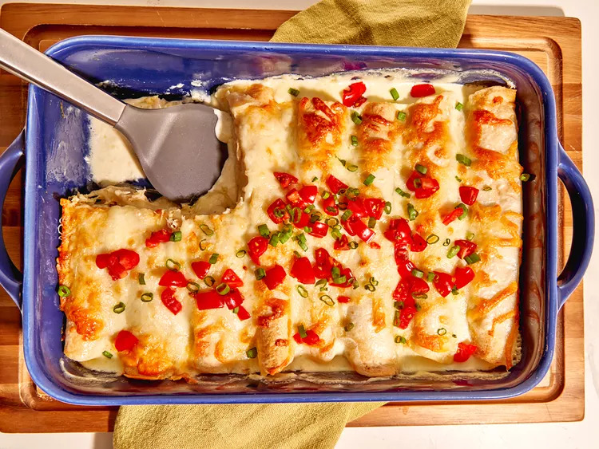

Creamy Mississippi Chicken Enchiladas

These creamy Mississippi chicken enchiladas take creamy, cheesy slow cooker Mississippi chicken,
flavored with pepperoncini and ranch dressing, to a new level.
Shredding the chicken and making baked enchiladas is the obvious next step.
Ingredients
- 2 pounds skinless, boneless chicken breasts
- 1 (1 ounce) package dry ranch dressing mix
- 1 cup drained sliced pepperoncini peppers
- 1/4 cup pepper juice (from jar of pepperoncini peppers)
- 4 tablespoons butter
- 1/4 cup water
- 8 ounces cream cheese, softened
- 1/2 cup sour cream
- 3 cups shredded Monterey Jack cheese
- 8 (10 inch) flour tortillas
- 1 1/2 cups heavy cream
- Sliced green onions and pico de gallo, for serving
Directions
-
Place chicken, ranch dressing mix, pepperoncini, pepper juice, butter, and water, in that order, into a slow cooker.
Cook on High for 2 hours or Low for 3 1/2 hours until chicken easily shreds with a fork.
-
Preheat the oven to 350 degrees F (1 degrees C). Remove half of the liquid in the slow cooker and discard.
Shred chicken in the remaining liquid. Stir in cream cheese and sour cream.
-
Place about 1/2 cup chicken mixture and 2 tablespoons cheese in each tortilla and roll to seal.
Place seam side down in a 9x13-inch casserole dish. Top with remaining cheese and pour heavy cream evenly over the top.
-
Bake in the preheated oven until browned around the edges and bubbly, about 30 minutes. Let stand for 5 to 10 minutes before serving.
Top with green onions and pico de gallo.